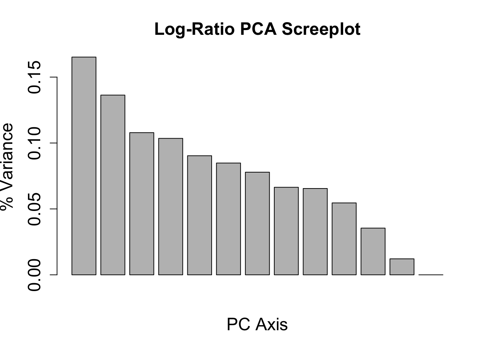
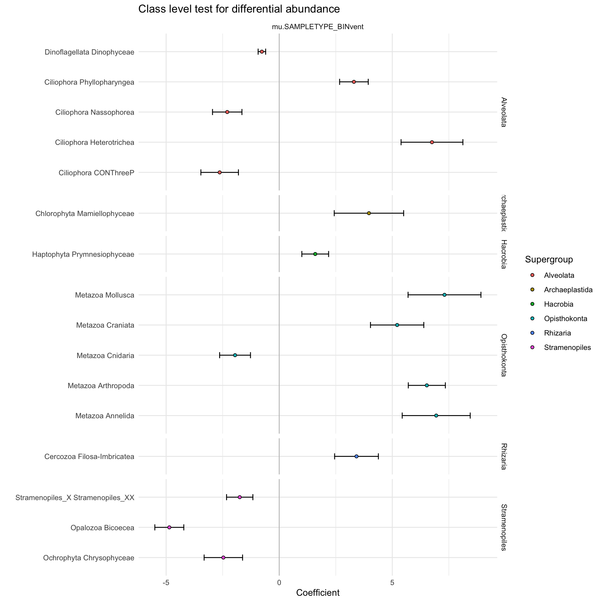

Code
library(tidyverse); library(phyloseq); library(ape)
library(ggupset)Set up R environment
library(tidyverse); library(phyloseq); library(ape)
library(ggupset)Import previously sequenced and analyzed tag-sequence data. See https://shu251.github.io/microeuk-amplicon-survey/ for additional information.
load("input-data/MCR-amplicon-data.RData", verbose = T)Loading objects:
phylo_obj
samplenames
physeq_wnames
metadata_mcr
asv_wtax_qc
TAX
tax_matrix
physeq_mcr# physeq_mcrvent_ids <- c("BSW", "Plume")
vent_ids <- c("BSW","Plume", "Shrimpocalypse", "LotsOShrimp", "X18", "OMT", "OldManTree", "Rav2", "MustardStand", "ShrimpHole", "WhiteCastle", "ArrowLoop")
vent_fullname <- c("Background","Plume", "Shrimpocalypse", "Lots 'O Shrimp", "X-18", "Old Man Tree", "Old Man Tree", "Ravelin #2", "Mustard Stand", "Shrimp Hole", "White Castle", "Arrow Loop")
site_ids <- c("VD", "Piccard")
site_fullname <- c("Von Damm", "Piccard")
# Colors for VD and Piccard
site_colors <- c("#418b84", "#943b36")
# site_colors
# Vent colors
vent_colors <- c("#c2bfc2","#ebdac9", "#c02c5b", "#cfae20", "#86952c", "#a88fab", "#a88fab", "#70b2aa", "#8c906d", "#806fa2", "#8cabcf", "#609482")
names(vent_colors) <- vent_fullname
names(site_colors) <- site_fullname
# Cooler colors for VD
# c("#4e7d4b") green
#569c91 blue
#ae8fbb purple
#ce86ba a lighter purple
#31464a dark dark green
#8c906d grey green
#bab446 yellow green
#ebdac9 white - cream
#c2bfc2 grey
# Piccard
#c02c5b pink - red
#d65a9e pink
##cfae20 yellow
all_taxa_color = c("#fa9fb5", "#c51b8a", "#67000d", "#ef3b2c", "#ffffcc", "#feb24c", "#c7e9b4", "#1d91c0", "#deebf7", "#253494", "#9e9ac8", "#238b45", "#54278f", "#bdbdbd", "#252525", "#fa9fb5", "#c51b8a", "#67000d", "#ef3b2c", "#ffffcc", "#feb24c", "#c7e9b4", "#1d91c0", "#253494", "#9e9ac8", "#238b45", "#54278f", "#bdbdbd", "#252525")Import environmental parameters and look at Mid-Cayman Rise sites.
env_params <- read.delim(file = "input-data/table_wenv.txt", sep = " ")
# env_params
subset_metadata <- env_params %>%
filter(SAMPLETYPE != "Incubation") %>%
filter(VENT != "Quakeplume") %>%
select(SITE, VENT, SAMPLETYPE, RATE_min, EUK_ml, GRAZING_EFFECT_hr) %>%
distinct() %>%
group_by(SITE, VENT, SAMPLETYPE) %>%
summarise(RATE_min_avg = mean(RATE_min),
EUK_ml_avg = mean(EUK_ml),
GRAZING_EFFECT_hr_avg = mean(GRAZING_EFFECT_hr)) %>%
distinct() %>%
pivot_longer(cols = ends_with("_avg"))`summarise()` has grouped output by 'SITE', 'VENT'. You can override using the
`.groups` argument.metadata_numeric <- metadata_mcr %>%
filter(SAMPLETYPE != "Incubation") %>%
select(VENT, SITE, SAMPLETYPE, DEPTH, TEMP, pH, PercSeawater, Mg, H2, H2S, CH4, ProkConc) %>%
distinct() %>%
pivot_longer(cols = DEPTH:ProkConc, values_to = "VALUE_TMP") %>%
mutate(value = as.numeric(VALUE_TMP)) %>% select(-VALUE_TMP) %>%
bind_rows(subset_metadata)Warning in mask$eval_all_mutate(quo): NAs introduced by coercionCode to make tile plot for environmental parameters, but may skip this.
# tileplot_env <- function(x){
# metadata_numeric %>%
# filter(name == x) %>%
# ggplot(aes(x = name, y = VENT, fill = value)) +
# geom_tile(color = "black") +
# facet_grid(SITE + SAMPLETYPE ~ ., switch = "both", space = "free", scale = "free") + theme_linedraw() +
# theme(axis.text.y = element_blank(),
# strip.text = element_blank(),
# strip.background = element_blank(),
# axis.ticks = element_blank(),
# strip.placement = "outside",
# legend.title = element_blank(),
# legend.position = "top",
# legend.text = element_text(size = 5),
# panel.background = element_blank(),
# panel.border = element_blank(),
# panel.grid = element_blank()) +
# labs(x = "", y = "") +
# scale_fill_distiller(palette = "Reds", direction=2, na.value = "grey50")
# }Optional plot, likely will not use.
# plot_grid(
# tileplot_env("TEMP") +
# scale_fill_distiller(palette = "YlOrRd", direction=2, na.value = "grey50") +
# theme(axis.text.y = element_text(color = "black", hjust = 1, vjust = 0),
# strip.text.y = element_text(color = "black", hjust = 0, vjust = 0),
# strip.placement = "outside"),
# tileplot_env("PercSeawater") +
# scale_fill_distiller(palette = "Blues", direction=2, na.value = "grey50"),
# tileplot_env("pH") +
# scale_fill_distiller(palette = "YlGnBu", direction=2, na.value = "grey50"),
# tileplot_env("Mg") +
# scale_fill_distiller(palette = "Purples", direction=2, na.value = "grey50"),
# # endemic_env("NO3"),
# tileplot_env("H2") +
# scale_fill_distiller(palette = "Purples", direction=2, na.value = "grey50"),
# tileplot_env("CH4") +
# scale_fill_distiller(palette = "Purples", direction=2, na.value = "grey50"),
# tileplot_env("H2S") +
# scale_fill_distiller(palette = "Purples", direction=2, na.value = "grey50"),
# tileplot_env("ProkConc") +
# scale_fill_distiller(palette = "Oranges", direction=2, na.value = "grey50"),
# tileplot_env("EUK_ml_avg") +
# theme(axis.text.y = element_text(color = "black", hjust = 1, vjust = 0),
# strip.text.y = element_text(color = "black", hjust = 0, vjust = 0),
# strip.placement = "outside") +
# scale_fill_distiller(palette = "Oranges", direction=2, na.value = "grey50"),
# tileplot_env("GRAZING_EFFECT_hr_avg") +
# scale_fill_distiller(palette = "Oranges", direction=2, na.value = "grey50"),
# nrow = 1,
# rel_widths = c(4,1,1,1,1,1,1,1, 4, 1)
# )Ordination analysis and methods to look at whole protistan communities at MCR.
# | message: false
library(vegan); library(ggdendro); library(compositions)Loading required package: permuteLoading required package: latticeThis is vegan 2.6-2Welcome to compositions, a package for compositional data analysis.
Find an intro with "? compositions"
Attaching package: 'compositions'The following object is masked from 'package:ape':
balanceThe following objects are masked from 'package:stats':
anova, cor, cov, dist, varThe following objects are masked from 'package:base':
%*%, norm, scale, scale.default# head(asv_wtax_qc)
asv_mcr_numeric <- asv_wtax_qc %>%
filter(value > 0) %>%
group_by(FeatureID, SAMPLENAME) %>%
summarise(MEAN_ACROSS_REPS = mean(value)) %>%
select(FeatureID, SAMPLENAME, MEAN_ACROSS_REPS) %>%
pivot_wider(names_from = SAMPLENAME, values_from = MEAN_ACROSS_REPS, values_fill = 0) %>%
column_to_rownames(var = "FeatureID")`summarise()` has grouped output by 'FeatureID'. You can override using the
`.groups` argument.Transform compositional data, center log ratio.
logratio_mcr <- data.frame(compositions::clr(t(asv_mcr_numeric)))
# dim(logratio_mcr)
# ?alr()
# ?ilr()
pca_logratio <- prcomp(logratio_mcr)
variance_logratio <- (pca_logratio$sdev^2)/sum(pca_logratio$sdev^2)
barplot(variance_logratio, main = "Log-Ratio PCA Screeplot", xlab = "PC Axis", ylab = "% Variance",
cex.names = 1.5, cex.axis = 1.5, cex.lab = 1.5, cex.main = 1.5)
# Extract PCA points
mcr_pca_pts <- data.frame(pca_logratio$x, SAMPLE = rownames(pca_logratio$x)) %>%
rownames_to_column(var = "SAMPLENAME") %>%
separate(SAMPLENAME, c("SITE", "SAMPLETYPE", "YEAR", "VENT"), " ",
remove = FALSE) Warning: Expected 4 pieces. Additional pieces discarded in 21 rows [1, 2, 3, 4,
5, 6, 7, 8, 9, 10, 11, 12, 13, 14, 15, 16, 17, 18, 19, 20, ...].# unique(mcr_pca_pts$VENT)
# vent_ids
# site_fullname
mcr_pca_pts %>%
mutate(VENT_ORDER = factor(VENT, levels = vent_ids, labels = vent_fullname),
SITE_ORDER = factor(SITE, levels = c("VonDamm", "Piccard"), labels = site_fullname)) %>%
mutate(TYPE = case_when(
SAMPLETYPE == "Incubation" ~ "Incubation",
TRUE ~ "in situ"
)) %>%
ggplot(aes(x = PC1, y = PC2)) +
geom_point(color = "black", stroke = 1.3, size = 5, aes(shape = SITE_ORDER, fill = VENT_ORDER, alpha = TYPE)) +
scale_shape_manual(values = c(21, 24)) +
scale_alpha_manual(values = c(1,0.5)) +
scale_fill_manual(values = vent_colors) +
theme_linedraw() +
guides(fill = guide_legend(override.aes = list(shape = c(22)))) +
geom_hline(yintercept = 0) + geom_vline(xintercept = 0)Dendrogram analysis
# ?decostand()
# Relative abundance
rel_abun <- decostand(asv_mcr_numeric, MARGIN = 2, method = "total")
# Cluster dendrogram (average hierarchical clustering)
cluster_mcr <- hclust(dist(t(rel_abun)), method = "average")
dendro <- as.dendrogram(cluster_mcr)
mcr_dendro <- dendro_data(dendro, type = "rectangle")mcr_dendro_plot <- ggplot(segment(mcr_dendro)) +
geom_segment(aes(x = x, y = y, xend = xend,
yend = yend)) +
coord_flip() +
scale_y_reverse(expand = c(0.2, 0.5), breaks = c(0, 0.2, 0.4, 0.6, 0.8)) +
geom_text(aes(x = x, y = y, label = label, angle = 0, hjust = 0), data = label(mcr_dendro)) +
theme_dendro() + labs(y = "Dissimilarity") +
theme(axis.text.x = element_text(color = "black", size = 14), axis.line.x = element_line(color = "#252525"),
axis.ticks.x = element_line(), axis.title.x = element_text(color = "black",
size = 14))
# svg('figs/SUPPLEMENTARY-dendrogram-wreps.svg', w = 10, h = 8)
mcr_dendro_plot
asv_mcr_numeric_insitu <- asv_wtax_qc %>%
filter(value > 0) %>%
filter(SAMPLETYPE != "Incubation") %>%
group_by(FeatureID, SAMPLENAME) %>%
summarise(MEAN_ACROSS_REPS = mean(value)) %>%
select(FeatureID, SAMPLENAME, MEAN_ACROSS_REPS) %>%
pivot_wider(names_from = SAMPLENAME, values_from = MEAN_ACROSS_REPS, values_fill = 0) %>%
column_to_rownames(var = "FeatureID")`summarise()` has grouped output by 'FeatureID'. You can override using the
`.groups` argument.insitu_logratio_mcr <- data.frame(compositions::clr(t(asv_mcr_numeric_insitu)))
insitu_pca_logratio <- prcomp(insitu_logratio_mcr)
insitu_variance_logratio <- (insitu_pca_logratio$sdev^2)/sum(insitu_pca_logratio$sdev^2)
barplot(insitu_variance_logratio, main = "Log-Ratio PCA Screeplot", xlab = "PC Axis", ylab = "% Variance",
cex.names = 1.5, cex.axis = 1.5, cex.lab = 1.5, cex.main = 1.5)
# Extract PCA points for only insitu samples
insitu_mcr_pca_pts <- data.frame(insitu_pca_logratio$x, SAMPLE = rownames(insitu_pca_logratio$x)) %>%
rownames_to_column(var = "SAMPLENAME") %>%
separate(SAMPLENAME, c("SITE", "SAMPLETYPE", "YEAR", "VENT"), " ",
remove = FALSE) Warning: Expected 4 pieces. Additional pieces discarded in 13 rows [1, 2, 3, 4,
5, 6, 7, 8, 9, 10, 11, 12, 13].insitu_mcr_pca_pts %>%
mutate(TYPE = case_when(
SAMPLETYPE == "Incubation" ~ "Incubation",
TRUE ~ "in situ"
)) %>%
ggplot(aes(x = PC1, y = PC2)) +
geom_point(color = "black", size = 4, aes(shape = SITE, fill = VENT, alpha = TYPE)) +
scale_shape_manual(values = c(21, 24)) +
scale_alpha_manual(values = c(1,0.4)) +
theme_linedraw() +
guides(fill = guide_legend(override.aes = list(shape = c(22)))) +
geom_hline(yintercept = 0) + geom_vline(xintercept = 0)
# Keep same sample colors to compare to cluster analysis with in situ and Tf samples.Try to pair with dendrogram
out_labels <- as.data.frame(mcr_dendro$labels)
mcr_sample_order <- as.character(out_labels$label)alv <- c("Alveolata-Ellobiopsidae", "Alveolata-Perkinsea", "Alveolata-Unknown", "Alveolata-Chrompodellids", "Alveolata-Apicomplexa")
# head(asv_wtax_qc)
bubble <- asv_wtax_qc %>%
filter(value > 0) %>%
# Avg seq count by ASV across replicates
group_by(SAMPLENAME, SITE, VENT, SAMPLETYPE, Taxon, FeatureID) %>%
summarise(avg_seq = mean(value)) %>%
# Separate and curate taxa information
# filter(SAMPLETYPE != "Incubation") %>%
separate(Taxon, c("Domain", "Supergroup",
"Phylum", "Class", "Order",
"Family", "Genus", "Species"), sep = ";") %>%
filter(Domain == "Eukaryota") %>% #select eukaryotes only
filter(Supergroup != "Opisthokonta") %>% # remove multicellular metazoa
mutate(Supergroup = ifelse(is.na(Supergroup), "Unknown Eukaryota", Supergroup),
Phylum = ifelse(is.na(Phylum), "Unknown", Phylum),
Phylum = ifelse(Phylum == "Alveolata_X", "Ellobiopsidae", Phylum),
Supergroup = ifelse(Supergroup == "Alveolata", paste(Supergroup, Phylum, sep = "-"), Supergroup)) %>%
mutate(SUPERGROUP = case_when(
Supergroup %in% alv ~ "Other Alveolata",
Supergroup == "Eukaryota_X" ~ "Unknown Eukaryota",
Phylum == "Cercozoa" ~ "Rhizaria-Cercozoa",
Phylum == "Radiolaria" ~ "Rhizaria-Radiolaria",
Phylum == "Ochrophyta" ~ "Stramenopiles-Ochrophyta",
Phylum == "Opalozoa" ~ "Stramenopiles-Opalozoa",
Phylum == "Sagenista" ~ "Stramenopiles-Sagenista",
TRUE ~ Supergroup
)) %>%
# Taxa to supergroup
mutate(SupergroupPhylum = SUPERGROUP) %>%
group_by(SAMPLENAME, SITE, VENT, SAMPLETYPE) %>%
mutate(TOTAL_SEQ = sum(avg_seq)) %>%
ungroup() %>%
group_by(SAMPLENAME, SITE, VENT, SAMPLETYPE, SUPERGROUP) %>%
summarise(SUM = sum(avg_seq),
REL_ABUN = SUM/TOTAL_SEQ) %>%
mutate(SAMPLENAME_ORDER = factor(SAMPLENAME, levels = mcr_sample_order)) %>%
ggplot(aes(x = SAMPLENAME_ORDER, y = SUPERGROUP, size = REL_ABUN)) +
geom_point(shape = 21, color = "white", aes(size = REL_ABUN, fill = SUPERGROUP, alpha = 0.4)) +
scale_size_continuous(range = c(2,14)) +
# facet_grid(. ~ SITE, scales = "free", space = "free") +
theme_minimal() +coord_flip() +
theme(legend.position = "none",
axis.text.x = element_text(color = "black", angle = 45, hjust = 1, vjust = 1))`summarise()` has grouped output by 'SAMPLENAME', 'SITE', 'VENT', 'SAMPLETYPE',
'Taxon'. You can override using the `.groups` argument.Warning: Expected 8 pieces. Additional pieces discarded in 10924 rows [3, 10,
11, 12, 13, 14, 18, 19, 20, 21, 23, 27, 28, 30, 31, 32, 33, 34, 35, 38, ...].Warning: Expected 8 pieces. Missing pieces filled with `NA` in 6487 rows [1, 2,
4, 5, 6, 7, 8, 9, 15, 16, 17, 22, 24, 25, 26, 29, 36, 37, 48, 49, ...].`summarise()` has grouped output by 'SAMPLENAME', 'SITE', 'VENT', 'SAMPLETYPE',
'SUPERGROUP'. You can override using the `.groups` argument.bubble
# mcr_dendro_plot + bubble + patchwork::plot_layout(ncol = 2) + patchwork::plot_annotation(tag_levels = "a")load("input-data/MCR-amplicon-data.RData", verbose=TRUE)Loading objects:
phylo_obj
samplenames
physeq_wnames
metadata_mcr
asv_wtax_qc
TAX
tax_matrix
physeq_mcr# unique(asv_wtax_qc$SITE)
head(asv_wtax_qc)# A tibble: 6 22
FeatureID SAMPLE value Taxon Conse SAMPL VENT SITE SAMPL DEPTH SAMPL
<chr> <chr> <dbl> <chr> <dbl> <chr> <chr> <chr> <chr> <chr> <chr>
1 00056209 52_MC 0 Euka 0.8 "Picca Lots Picc "" "" Incuba
2 00056209 53_MC 0 Euka 0.8 "Picca Lots Picc "" "" Incuba
3 00056209 54_MC 0 Euka 0.8 "VonDa Must VonD "" "" Incuba
4 00056209 55_MC 0 Euka 0.8 "VonDa Shri VonD "" "" Incuba
5 00056209 57_MC 0 Euka 0.8 "Picca Shri Picc "" "" Incuba
6 00056209 58_MC 0 Euka 0.8 "VonDa Plume VonD "" "" Incuba
# with 11 more variables: SAMPLETYPE_BIN <chr>, YEAR <chr>, TEMP <chr>,
# pH <chr>, PercSeawater <chr>, Mg <chr>, H2 <chr>, H2S <chr>, CH4 <chr>,
# ProkConc <chr>, Sample_or_Control <chr>, and abbreviated variable names
# Consensus, SAMPLENAME, SAMPLEID, SAMPLETYPE# head(TAX)Function to generate upsetR plot with varied taxonomic levels.
Questions:
How many ASVs are shared among vent sites within Von Damm and Piccard?
What about shared ASVs across each vent field?
Is there a taxonomic level that drives site-to-site or field-to-field community dissimilarity?
# options for taxa: SupergroupPhylum, Supergroup, Phylum, Class, Order, Family, Genus, Species
alv <- c("Alveolata-Ellobiopsidae", "Alveolata-Perkinsea", "Alveolata-Unknown", "Alveolata-Chrompodellids", "Alveolata-Apicomplexa")
all_taxa_color = c("#fa9fb5", "#c51b8a", "#67000d", "#ef3b2c", "#ffffcc", "#feb24c", "#c7e9b4", "#1d91c0", "#deebf7", "#253494", "#9e9ac8", "#238b45", "#54278f", "#bdbdbd", "#252525", "#fa9fb5", "#c51b8a", "#67000d", "#ef3b2c", "#ffffcc", "#feb24c", "#c7e9b4", "#1d91c0", "#253494", "#9e9ac8", "#238b45", "#54278f", "#bdbdbd", "#252525")
asv_wtax_qc %>%
filter(value > 0) %>%
filter(SAMPLETYPE != "Incubation") %>%
separate(Taxon, c("Domain", "Supergroup",
"Phylum", "Class", "Order",
"Family", "Genus", "Species"), sep = ";") %>%
filter(Domain == "Eukaryota") %>% #select eukaryotes only
filter(Supergroup != "Opisthokonta") %>% # remove multicellular metazoa
mutate(Supergroup = ifelse(is.na(Supergroup), "Unknown Eukaryota", Supergroup),
Phylum = ifelse(is.na(Phylum), "Unknown", Phylum),
Phylum = ifelse(Phylum == "Alveolata_X", "Ellobiopsidae", Phylum),
Supergroup = ifelse(Supergroup == "Alveolata", paste(Supergroup, Phylum, sep = "-"), Supergroup)) %>%
mutate(SUPERGROUP = case_when(
Supergroup %in% alv ~ "Other Alveolata",
Supergroup == "Eukaryota_X" ~ "Unknown Eukaryota",
Phylum == "Cercozoa" ~ "Rhizaria-Cercozoa",
Phylum == "Radiolaria" ~ "Rhizaria-Radiolaria",
Phylum == "Ochrophyta" ~ "Stramenopiles-Ochrophyta",
Phylum == "Opalozoa" ~ "Stramenopiles-Opalozoa",
Phylum == "Sagenista" ~ "Stramenopiles-Sagenista",
TRUE ~ Supergroup
)) %>%
# Taxa to supergroup
mutate(SupergroupPhylum = SUPERGROUP) %>% #add modified "supergroup-phylum category"
# Average across replicates
group_by(FeatureID, SAMPLENAME, VENT, SupergroupPhylum) %>%
summarise(AVG = mean(value)) %>%
ungroup() %>%
separate(SAMPLENAME, c("SITE", "SAMPLETYPE", "YEAR", "Sample_tmp"), remove = TRUE) %>%
mutate(REGION = "Mid-Cayman Rise") %>%
mutate(VENTNAME = paste(SITE, VENT, sep = " ")) %>%
select(-Sample_tmp) %>%
unite(SAMPLE, SITE, SAMPLETYPE, VENT, sep = " ", remove = FALSE) %>%
group_by(SupergroupPhylum, SAMPLE) %>%
summarise(SUM = sum(AVG)) %>%
ungroup() %>%
distinct(SupergroupPhylum, SUM, SAMPLE, .keep_all = TRUE) %>%
group_by(SupergroupPhylum) %>%
summarise(SAMPLE = list(SAMPLE)) %>%
ggplot(aes(x = SAMPLE)) +
geom_bar(color = "black", width = 0.7, aes(fill = SupergroupPhylum)) +
scale_x_upset(n_intersections = 25) +
scale_y_continuous(expand = c(0,0)) +
labs(x = "", y = "Shared at taxonomic level") +
theme_linedraw() +
theme(axis.text.y = element_text(color="black", size=14, face = "bold"),
axis.text.x = element_text(color="black", size=14, face = "bold"),
axis.title = element_text(color="black", size=14, face = "bold"),
legend.text = element_text(color = "black", size = 12, face = "bold"),
legend.title = element_blank(),
panel.grid.minor = element_blank(),
plot.margin = margin(1, 1, 1, 5, "cm")) +
scale_fill_manual(values = all_taxa_color)Warning: Expected 8 pieces. Additional pieces discarded in 5926 rows [5, 6, 7,
8, 9, 10, 11, 14, 15, 16, 17, 20, 21, 22, 24, 25, 26, 28, 29, 30, ...].Warning: Expected 8 pieces. Missing pieces filled with `NA` in 3451 rows [1, 2,
3, 4, 12, 13, 18, 19, 23, 27, 35, 44, 45, 46, 48, 49, 53, 54, 55, 56, ...].`summarise()` has grouped output by 'FeatureID', 'SAMPLENAME', 'VENT'. You can
override using the `.groups` argument.Warning: Expected 4 pieces. Additional pieces discarded in 7678 rows [1, 2, 3,
4, 5, 6, 7, 8, 9, 10, 11, 12, 13, 14, 15, 16, 17, 18, 19, 20, ...].`summarise()` has grouped output by 'SupergroupPhylum'. You can override using
the `.groups` argument.
# Filter data to reduce noise and show sample type to vent ecosystem variability.
# asv_wtax_qc %>%
filter(value > 0) %>%
filter(SAMPLETYPE != "Incubation") %>%
separate(Taxon, c("Domain", "Supergroup",
"Phylum", "Class", "Order",
"Family", "Genus", "Species"), sep = ";", remove = FALSE) %>%
filter(Domain == "Eukaryota") %>% #select eukaryotes only
filter(Supergroup != "Opisthokonta") %>% # remove multicellular metazoa
mutate(Supergroup = ifelse(is.na(Supergroup), "Unknown Eukaryota", Supergroup),
Phylum = ifelse(is.na(Phylum), "Unknown", Phylum),
Phylum = ifelse(Phylum == "Alveolata_X", "Ellobiopsidae", Phylum),
Supergroup = ifelse(Supergroup == "Alveolata", paste(Supergroup, Phylum, sep = "-"), Supergroup)) %>%
mutate(SUPERGROUP = case_when(
Supergroup %in% alv ~ "Other Alveolata",
Supergroup == "Eukaryota_X" ~ "Unknown Eukaryota",
Phylum == "Cercozoa" ~ "Rhizaria-Cercozoa",
Phylum == "Radiolaria" ~ "Rhizaria-Radiolaria",
Phylum == "Ochrophyta" ~ "Stramenopiles-Ochrophyta",
Phylum == "Opalozoa" ~ "Stramenopiles-Opalozoa",
Phylum == "Sagenista" ~ "Stramenopiles-Sagenista",
TRUE ~ Supergroup
)) %>%
# Taxa to supergroup
mutate(SupergroupPhylum = SUPERGROUP) %>% #add modified "supergroup-phylum category"
# Average across replicates
group_by(FeatureID, SAMPLENAME, VENT, SupergroupPhylum, Taxon) %>%
summarise(AVG = mean(value)) %>%
ungroup() %>%
separate(SAMPLENAME, c("SITE", "SAMPLETYPE", "YEAR", "Sample_tmp"), remove = TRUE) %>%
mutate(REGION = "Mid-Cayman Rise") %>%
mutate(VENTNAME = paste(SITE, VENT, sep = " ")) %>%
select(-Sample_tmp) %>%
unite(SAMPLE, SITE, SAMPLETYPE, VENT, sep = " ", remove = FALSE) %>%
group_by(SupergroupPhylum, Taxon, SAMPLE) %>%
summarise(SUM = sum(AVG)) %>%
ungroup() %>%
distinct(Taxon, SupergroupPhylum, SUM, SAMPLE, .keep_all = TRUE) %>%
group_by(SupergroupPhylum, Taxon) %>%
summarise(SAMPLE = list(SAMPLE)) %>%
ggplot(aes(x = SAMPLE)) +
geom_bar(color = "black", width = 0.7, aes(fill = SupergroupPhylum)) +
scale_x_upset(n_intersections = 25) +
scale_y_continuous(expand = c(0,0)) +
labs(x = "", y = "Shared at taxonomic level") +
theme_linedraw() +
theme(axis.text.y = element_text(color="black", size=14, face = "bold"),
axis.text.x = element_text(color="black", size=14, face = "bold"),
axis.title = element_text(color="black", size=14, face = "bold"),
legend.text = element_text(color = "black", size = 12, face = "bold"),
legend.title = element_blank(),
panel.grid.minor = element_blank(),
plot.margin = margin(1, 1, 1, 5, "cm")) +
scale_fill_manual(values = all_taxa_color)Warning: Expected 8 pieces. Additional pieces discarded in 5926 rows [5, 6, 7,
8, 9, 10, 11, 14, 15, 16, 17, 20, 21, 22, 24, 25, 26, 28, 29, 30, ...].Warning: Expected 8 pieces. Missing pieces filled with `NA` in 3451 rows [1, 2,
3, 4, 12, 13, 18, 19, 23, 27, 35, 44, 45, 46, 48, 49, 53, 54, 55, 56, ...].`summarise()` has grouped output by 'FeatureID', 'SAMPLENAME', 'VENT',
'SupergroupPhylum'. You can override using the `.groups` argument.Warning: Expected 4 pieces. Additional pieces discarded in 7678 rows [1, 2, 3,
4, 5, 6, 7, 8, 9, 10, 11, 12, 13, 14, 15, 16, 17, 18, 19, 20, ...].`summarise()` has grouped output by 'SupergroupPhylum', 'Taxon'. You can
override using the `.groups` argument.
`summarise()` has grouped output by 'SupergroupPhylum'. You can override using
the `.groups` argument.Warning: Removed 300 rows containing non-finite values (stat_count).
Example comparisons of shared taxonomic levels. Explanation: At ASV level, most ASVs are not shared across samples. So at other taxonomic categories, are these taxa also present or are there whole classes not present?
# | fig-width: 10
# | fig-height: 15
# SupergroupPhylum, Supergroup, Phylum, Class, Order, Family, Genus, Species
# make_upset_plot(asv_wtax_qc, SupergroupPhylum)
# library(plotly)
# ggplotly(tmp)
# make_upset_plot(asv_wtax_qc, Class) + theme(legend.position = "none")
# make_upset_plot(asv_wtax_qc, Supergroup) + theme(legend.position = "none")A better visualization may be a presence/absence across samples with a tile plot.
alv <- c("Alveolata-Ellobiopsidae", "Alveolata-Perkinsea", "Alveolata-Unknown", "Alveolata-Chrompodellids", "Alveolata-Apicomplexa")
make_tile_plot_pa <- function(df, taxa_level, level0){
taxa_select <- enquo(taxa_level)
taxa_select_higher <- enquo(level0)
df %>%
filter(value > 0) %>%
filter(SAMPLETYPE != "Incubation") %>%
separate(Taxon, c("Domain", "Supergroup",
"Phylum", "Class", "Order",
"Family", "Genus", "Species"), sep = ";") %>%
filter(Domain == "Eukaryota") %>% #select eukaryotes only
filter(Supergroup != "Opisthokonta") %>% # remove multicellular metazoa
mutate(Supergroup = ifelse(is.na(Supergroup), "Unknown Eukaryota", Supergroup),
Phylum = ifelse(is.na(Phylum), "Unknown", Phylum),
Phylum = ifelse(Phylum == "Alveolata_X", "Ellobiopsidae", Phylum),
Supergroup = ifelse(Supergroup == "Alveolata", paste(Supergroup, Phylum, sep = "-"), Supergroup)) %>%
mutate(SUPERGROUP = case_when(
Supergroup %in% alv ~ "Other Alveolata",
Supergroup == "Eukaryota_X" ~ "Unknown Eukaryota",
Phylum == "Cercozoa" ~ "Rhizaria-Cercozoa",
Phylum == "Radiolaria" ~ "Rhizaria-Radiolaria",
Phylum == "Ochrophyta" ~ "Stramenopiles-Ochrophyta",
Phylum == "Opalozoa" ~ "Stramenopiles-Opalozoa",
Phylum == "Sagenista" ~ "Stramenopiles-Sagenista",
TRUE ~ Supergroup
)) %>%
# Taxa to supergroup
mutate(SupergroupPhylum = SUPERGROUP) %>% #add modified "supergroup-phylum category"
# Average across replicates
group_by(FeatureID, SAMPLENAME, VENT, !!taxa_select_higher, !!taxa_select) %>%
summarise(AVG = mean(value)) %>%
ungroup() %>%
separate(SAMPLENAME, c("SITE", "SAMPLETYPE", "YEAR", "Sample_tmp"), remove = TRUE) %>%
mutate(REGION = "Mid-Cayman Rise") %>%
mutate(VENTNAME = paste(SITE, VENT, sep = " ")) %>%
select(-Sample_tmp) %>%
unite(SAMPLE, SITE, SAMPLETYPE, VENT, sep = " ", remove = FALSE) %>%
group_by(SITE, !!taxa_select_higher, !!taxa_select, SAMPLE) %>%
summarise(SUM = sum(AVG)) %>%
ungroup() %>%
add_column(PRESENT = 1) %>%
drop_na() %>% # remove NAs in taxa categories
ggplot(aes(x = SAMPLE, y = !!taxa_select)) +
geom_tile(color = "white", fill = "black", aes(fill = PRESENT)) +
facet_grid(SupergroupPhylum ~ SITE, space = "free", scales = "free") +
theme_linedraw() +
labs(x= "", y = "") +
theme(axis.text.y = element_text(color="black", size=11),
axis.text.x = element_text(color="black", size=11, angle = 90, vjust = 0.5, hjust = 1),
axis.title = element_text(color="black", size=11),
legend.text = element_text(color = "black", size = 11),
legend.title = element_blank(),
panel.grid.minor = element_blank(),
panel.grid.major = element_blank(),
plot.margin = margin(1, 1, 1, 5, "cm"))
}# | fig-width: 10
# | fig-height: 20
# make_tile_plot_pa(asv_wtax_qc, "Class", "SupergroupPhylum")Above plot addresses presence/absence of the families within major protistan supergroups across the Von Damm and Piccard vent, plume, and background samples.
Corncob analysis can be used to identify specific ASVs that may be enriched when we compare non-vent to vent samples.
Questions:
For vent vs. non-vent ASVs, what ASVs are enriched at Piccard?
For vent vs. non-vent ASVs, what ASVs are enriched at Von Damm?
For vent vs. non-vent ASVs, what ASVs are enriched at both sites?
# | message: false
# devtools::install_github("bryandmartin/corncob")
library(corncob); library(phyloseq)load("input-data/MCR-amplicon-data.RData", verbose = TRUE)Loading objects:
phylo_obj
samplenames
physeq_wnames
metadata_mcr
asv_wtax_qc
TAX
tax_matrix
physeq_mcrExplore data input for corncob
# otu_table(physeq_mcr)[1:10, 1:3]
sample_data(physeq_mcr) X VENT
52_MCR_Piccard_expTf_LotsOShrimp_A_0_Jun2021 2 LotsOShrimp
53_MCR_Piccard_expTf_LotsOShrimp_B_0_Jun2021 3 LotsOShrimp
54_MCR_VonDamm_expTf_MustardStand_0_0_Jun2021 9 MustardStand
55_MCR_VonDamm_expTf_ShrimpHole_0_0_Jun2021 10 ShrimpHole
57_MCR_Piccard_expTf_Shrimpocalypse_0_0_Jun2021 4 Shrimpocalypse
58_MCR_VonDamm_expTf_Plume_0_0_Jun2021 11 Plume
59_MCR_VonDamm_expTf_X18_0_0_Jun2021 12 X18
60_MCR_VonDamm_expTf_BSW_0_0_Jun2021 13 BSW
61_MCR_VonDamm_expTf_Rav2_0_0_Jun2021 14 Rav2
63_MCR_VonDamm_CTD_BSW_CTD002_0_Jun2021 8 BSW
65_MCR_VonDamm_CTD_Plume_CTD003_0_Jun2021 15 Plume
66_MCR_VonDamm_HOG_ArrowLoop_J21243HOG18_5_Jun2021 16 ArrowLoop
67_MCR_VonDamm_HOG_WhiteCastle_J21235HOG12_5_Jun2021 17 WhiteCastle
69_MCR_VonDamm_HOG_MustardStand_J21243HOG14_5_Jun2021 18 MustardStand
70_MCR_VonDamm_HOG_Rav2_J21238HOG14_5_Jun2021 19 Rav2
71_MCR_VonDamm_HOG_OldManTree_J21238HOG20_5_Jun2021 20 OldManTree
72_MCR_VonDamm_HOG_ShrimpHole_J21244HOG18_0_Jun2021 21 ShrimpHole
73_MCR_Piccard_CTD_BSW_CTD005_0_Jun2021 1 BSW
74_MCR_Piccard_CTD_Plume_CTD004_5_Jun2021 5 Plume
76_MCR_VonDamm_HOG_X18_J21235HOG20_0_Jun2021 22 X18
77_MCR_Piccard_HOG_Shrimpocalypse_J21240HOG14_0_Jun2021 6 Shrimpocalypse
78_MCR_Piccard_HOG_LotsOShrimp_J21241HOG14_0_Jun2021 7 LotsOShrimp
80_MCR_VonDamm_HOG_Rav2_J21244HOG20_0_Jun2021 23 Rav2
SITE SAMPLEID DEPTH
52_MCR_Piccard_expTf_LotsOShrimp_A_0_Jun2021 Piccard
53_MCR_Piccard_expTf_LotsOShrimp_B_0_Jun2021 Piccard
54_MCR_VonDamm_expTf_MustardStand_0_0_Jun2021 VonDamm
55_MCR_VonDamm_expTf_ShrimpHole_0_0_Jun2021 VonDamm
57_MCR_Piccard_expTf_Shrimpocalypse_0_0_Jun2021 Piccard
58_MCR_VonDamm_expTf_Plume_0_0_Jun2021 VonDamm
59_MCR_VonDamm_expTf_X18_0_0_Jun2021 VonDamm
60_MCR_VonDamm_expTf_BSW_0_0_Jun2021 VonDamm
61_MCR_VonDamm_expTf_Rav2_0_0_Jun2021 VonDamm
63_MCR_VonDamm_CTD_BSW_CTD002_0_Jun2021 VonDamm 2400
65_MCR_VonDamm_CTD_Plume_CTD003_0_Jun2021 VonDamm 1979
66_MCR_VonDamm_HOG_ArrowLoop_J21243HOG18_5_Jun2021 VonDamm 2309
67_MCR_VonDamm_HOG_WhiteCastle_J21235HOG12_5_Jun2021 VonDamm 2307
69_MCR_VonDamm_HOG_MustardStand_J21243HOG14_5_Jun2021 VonDamm 2374
70_MCR_VonDamm_HOG_Rav2_J21238HOG14_5_Jun2021 VonDamm 2389.6
71_MCR_VonDamm_HOG_OldManTree_J21238HOG20_5_Jun2021 VonDamm 2375.8
72_MCR_VonDamm_HOG_ShrimpHole_J21244HOG18_0_Jun2021 VonDamm 2376
73_MCR_Piccard_CTD_BSW_CTD005_0_Jun2021 Piccard 4776
74_MCR_Piccard_CTD_Plume_CTD004_5_Jun2021 Piccard 4944
76_MCR_VonDamm_HOG_X18_J21235HOG20_0_Jun2021 VonDamm 2377
77_MCR_Piccard_HOG_Shrimpocalypse_J21240HOG14_0_Jun2021 Piccard 4945
78_MCR_Piccard_HOG_LotsOShrimp_J21241HOG14_0_Jun2021 Piccard 4967
80_MCR_VonDamm_HOG_Rav2_J21244HOG20_0_Jun2021 VonDamm 2388.9
SAMPLETYPE
52_MCR_Piccard_expTf_LotsOShrimp_A_0_Jun2021 Incubation
53_MCR_Piccard_expTf_LotsOShrimp_B_0_Jun2021 Incubation
54_MCR_VonDamm_expTf_MustardStand_0_0_Jun2021 Incubation
55_MCR_VonDamm_expTf_ShrimpHole_0_0_Jun2021 Incubation
57_MCR_Piccard_expTf_Shrimpocalypse_0_0_Jun2021 Incubation
58_MCR_VonDamm_expTf_Plume_0_0_Jun2021 Incubation
59_MCR_VonDamm_expTf_X18_0_0_Jun2021 Incubation
60_MCR_VonDamm_expTf_BSW_0_0_Jun2021 Incubation
61_MCR_VonDamm_expTf_Rav2_0_0_Jun2021 Incubation
63_MCR_VonDamm_CTD_BSW_CTD002_0_Jun2021 Background
65_MCR_VonDamm_CTD_Plume_CTD003_0_Jun2021 Plume
66_MCR_VonDamm_HOG_ArrowLoop_J21243HOG18_5_Jun2021 Vent
67_MCR_VonDamm_HOG_WhiteCastle_J21235HOG12_5_Jun2021 Vent
69_MCR_VonDamm_HOG_MustardStand_J21243HOG14_5_Jun2021 Vent
70_MCR_VonDamm_HOG_Rav2_J21238HOG14_5_Jun2021 Vent
71_MCR_VonDamm_HOG_OldManTree_J21238HOG20_5_Jun2021 Vent
72_MCR_VonDamm_HOG_ShrimpHole_J21244HOG18_0_Jun2021 Vent
73_MCR_Piccard_CTD_BSW_CTD005_0_Jun2021 Background
74_MCR_Piccard_CTD_Plume_CTD004_5_Jun2021 Plume
76_MCR_VonDamm_HOG_X18_J21235HOG20_0_Jun2021 Vent
77_MCR_Piccard_HOG_Shrimpocalypse_J21240HOG14_0_Jun2021 Vent
78_MCR_Piccard_HOG_LotsOShrimp_J21241HOG14_0_Jun2021 Vent
80_MCR_VonDamm_HOG_Rav2_J21244HOG20_0_Jun2021 Vent
SAMPLETYPE_BIN YEAR
52_MCR_Piccard_expTf_LotsOShrimp_A_0_Jun2021 non-vent 2020
53_MCR_Piccard_expTf_LotsOShrimp_B_0_Jun2021 non-vent 2020
54_MCR_VonDamm_expTf_MustardStand_0_0_Jun2021 non-vent 2020
55_MCR_VonDamm_expTf_ShrimpHole_0_0_Jun2021 non-vent 2020
57_MCR_Piccard_expTf_Shrimpocalypse_0_0_Jun2021 non-vent 2020
58_MCR_VonDamm_expTf_Plume_0_0_Jun2021 non-vent 2020
59_MCR_VonDamm_expTf_X18_0_0_Jun2021 non-vent 2020
60_MCR_VonDamm_expTf_BSW_0_0_Jun2021 non-vent 2020
61_MCR_VonDamm_expTf_Rav2_0_0_Jun2021 non-vent 2020
63_MCR_VonDamm_CTD_BSW_CTD002_0_Jun2021 non-vent 2020
65_MCR_VonDamm_CTD_Plume_CTD003_0_Jun2021 non-vent 2020
66_MCR_VonDamm_HOG_ArrowLoop_J21243HOG18_5_Jun2021 vent 2020
67_MCR_VonDamm_HOG_WhiteCastle_J21235HOG12_5_Jun2021 vent 2020
69_MCR_VonDamm_HOG_MustardStand_J21243HOG14_5_Jun2021 vent 2020
70_MCR_VonDamm_HOG_Rav2_J21238HOG14_5_Jun2021 vent 2020
71_MCR_VonDamm_HOG_OldManTree_J21238HOG20_5_Jun2021 vent 2020
72_MCR_VonDamm_HOG_ShrimpHole_J21244HOG18_0_Jun2021 vent 2020
73_MCR_Piccard_CTD_BSW_CTD005_0_Jun2021 non-vent 2020
74_MCR_Piccard_CTD_Plume_CTD004_5_Jun2021 non-vent 2020
76_MCR_VonDamm_HOG_X18_J21235HOG20_0_Jun2021 vent 2020
77_MCR_Piccard_HOG_Shrimpocalypse_J21240HOG14_0_Jun2021 vent 2020
78_MCR_Piccard_HOG_LotsOShrimp_J21241HOG14_0_Jun2021 vent 2020
80_MCR_VonDamm_HOG_Rav2_J21244HOG20_0_Jun2021 vent 2020
TEMP pH
52_MCR_Piccard_expTf_LotsOShrimp_A_0_Jun2021
53_MCR_Piccard_expTf_LotsOShrimp_B_0_Jun2021
54_MCR_VonDamm_expTf_MustardStand_0_0_Jun2021
55_MCR_VonDamm_expTf_ShrimpHole_0_0_Jun2021
57_MCR_Piccard_expTf_Shrimpocalypse_0_0_Jun2021
58_MCR_VonDamm_expTf_Plume_0_0_Jun2021
59_MCR_VonDamm_expTf_X18_0_0_Jun2021
60_MCR_VonDamm_expTf_BSW_0_0_Jun2021
61_MCR_VonDamm_expTf_Rav2_0_0_Jun2021
63_MCR_VonDamm_CTD_BSW_CTD002_0_Jun2021 4.181 no data
65_MCR_VonDamm_CTD_Plume_CTD003_0_Jun2021 4.208
66_MCR_VonDamm_HOG_ArrowLoop_J21243HOG18_5_Jun2021 137 5.69
67_MCR_VonDamm_HOG_WhiteCastle_J21235HOG12_5_Jun2021 108 5.49
69_MCR_VonDamm_HOG_MustardStand_J21243HOG14_5_Jun2021 108 5.63
70_MCR_VonDamm_HOG_Rav2_J21238HOG14_5_Jun2021 94 5.81
71_MCR_VonDamm_HOG_OldManTree_J21238HOG20_5_Jun2021 121.6 5.69
72_MCR_VonDamm_HOG_ShrimpHole_J21244HOG18_0_Jun2021 21 7.72
73_MCR_Piccard_CTD_BSW_CTD005_0_Jun2021 4.46
74_MCR_Piccard_CTD_Plume_CTD004_5_Jun2021 4.46
76_MCR_VonDamm_HOG_X18_J21235HOG20_0_Jun2021 48 6.99
77_MCR_Piccard_HOG_Shrimpocalypse_J21240HOG14_0_Jun2021 85 5.11
78_MCR_Piccard_HOG_LotsOShrimp_J21241HOG14_0_Jun2021 36 5.92
80_MCR_VonDamm_HOG_Rav2_J21244HOG20_0_Jun2021 98.2 5.81
PercSeawater Mg
52_MCR_Piccard_expTf_LotsOShrimp_A_0_Jun2021 <NA> 0
53_MCR_Piccard_expTf_LotsOShrimp_B_0_Jun2021 <NA> 0
54_MCR_VonDamm_expTf_MustardStand_0_0_Jun2021 <NA> 0
55_MCR_VonDamm_expTf_ShrimpHole_0_0_Jun2021 <NA> 0
57_MCR_Piccard_expTf_Shrimpocalypse_0_0_Jun2021 <NA> 0
58_MCR_VonDamm_expTf_Plume_0_0_Jun2021 <NA> 0
59_MCR_VonDamm_expTf_X18_0_0_Jun2021 <NA> 0
60_MCR_VonDamm_expTf_BSW_0_0_Jun2021 <NA> 0
61_MCR_VonDamm_expTf_Rav2_0_0_Jun2021 <NA> 0
63_MCR_VonDamm_CTD_BSW_CTD002_0_Jun2021 100 no data
65_MCR_VonDamm_CTD_Plume_CTD003_0_Jun2021 <NA>
66_MCR_VonDamm_HOG_ArrowLoop_J21243HOG18_5_Jun2021 33.8 18.1
67_MCR_VonDamm_HOG_WhiteCastle_J21235HOG12_5_Jun2021 16.6 8.9
69_MCR_VonDamm_HOG_MustardStand_J21243HOG14_5_Jun2021 36.2 19.4
70_MCR_VonDamm_HOG_Rav2_J21238HOG14_5_Jun2021 33.4 18
71_MCR_VonDamm_HOG_OldManTree_J21238HOG20_5_Jun2021 25.6 13.7
72_MCR_VonDamm_HOG_ShrimpHole_J21244HOG18_0_Jun2021 96.4 51.8
73_MCR_Piccard_CTD_BSW_CTD005_0_Jun2021 100 53.7
74_MCR_Piccard_CTD_Plume_CTD004_5_Jun2021 <NA>
76_MCR_VonDamm_HOG_X18_J21235HOG20_0_Jun2021 52 28
77_MCR_Piccard_HOG_Shrimpocalypse_J21240HOG14_0_Jun2021 81.7 43.9
78_MCR_Piccard_HOG_LotsOShrimp_J21241HOG14_0_Jun2021 94.9 51
80_MCR_VonDamm_HOG_Rav2_J21244HOG20_0_Jun2021 33.4 18
H2 H2S
52_MCR_Piccard_expTf_LotsOShrimp_A_0_Jun2021
53_MCR_Piccard_expTf_LotsOShrimp_B_0_Jun2021
54_MCR_VonDamm_expTf_MustardStand_0_0_Jun2021
55_MCR_VonDamm_expTf_ShrimpHole_0_0_Jun2021
57_MCR_Piccard_expTf_Shrimpocalypse_0_0_Jun2021
58_MCR_VonDamm_expTf_Plume_0_0_Jun2021
59_MCR_VonDamm_expTf_X18_0_0_Jun2021
60_MCR_VonDamm_expTf_BSW_0_0_Jun2021
61_MCR_VonDamm_expTf_Rav2_0_0_Jun2021
63_MCR_VonDamm_CTD_BSW_CTD002_0_Jun2021 no data no data
65_MCR_VonDamm_CTD_Plume_CTD003_0_Jun2021
66_MCR_VonDamm_HOG_ArrowLoop_J21243HOG18_5_Jun2021 11500 1.74
67_MCR_VonDamm_HOG_WhiteCastle_J21235HOG12_5_Jun2021 14500 1.96
69_MCR_VonDamm_HOG_MustardStand_J21243HOG14_5_Jun2021 9800 1.79
70_MCR_VonDamm_HOG_Rav2_J21238HOG14_5_Jun2021 10200 1.37
71_MCR_VonDamm_HOG_OldManTree_J21238HOG20_5_Jun2021 11600 1.77
72_MCR_VonDamm_HOG_ShrimpHole_J21244HOG18_0_Jun2021 5.52744 no data
73_MCR_Piccard_CTD_BSW_CTD005_0_Jun2021
74_MCR_Piccard_CTD_Plume_CTD004_5_Jun2021
76_MCR_VonDamm_HOG_X18_J21235HOG20_0_Jun2021 no data 2.11
77_MCR_Piccard_HOG_Shrimpocalypse_J21240HOG14_0_Jun2021 0
78_MCR_Piccard_HOG_LotsOShrimp_J21241HOG14_0_Jun2021 22700
80_MCR_VonDamm_HOG_Rav2_J21244HOG20_0_Jun2021 10200 1.37
CH4 ProkConc
52_MCR_Piccard_expTf_LotsOShrimp_A_0_Jun2021
53_MCR_Piccard_expTf_LotsOShrimp_B_0_Jun2021
54_MCR_VonDamm_expTf_MustardStand_0_0_Jun2021
55_MCR_VonDamm_expTf_ShrimpHole_0_0_Jun2021
57_MCR_Piccard_expTf_Shrimpocalypse_0_0_Jun2021
58_MCR_VonDamm_expTf_Plume_0_0_Jun2021
59_MCR_VonDamm_expTf_X18_0_0_Jun2021
60_MCR_VonDamm_expTf_BSW_0_0_Jun2021
61_MCR_VonDamm_expTf_Rav2_0_0_Jun2021
63_MCR_VonDamm_CTD_BSW_CTD002_0_Jun2021 no data 34705.9161
65_MCR_VonDamm_CTD_Plume_CTD003_0_Jun2021 16478.313
66_MCR_VonDamm_HOG_ArrowLoop_J21243HOG18_5_Jun2021 1893.66 10369.792
67_MCR_VonDamm_HOG_WhiteCastle_J21235HOG12_5_Jun2021 2251.92 no data
69_MCR_VonDamm_HOG_MustardStand_J21243HOG14_5_Jun2021 1819.9608 56677
70_MCR_VonDamm_HOG_Rav2_J21238HOG14_5_Jun2021 1893.66 no data
71_MCR_VonDamm_HOG_OldManTree_J21238HOG20_5_Jun2021 1985.784 no data
72_MCR_VonDamm_HOG_ShrimpHole_J21244HOG18_0_Jun2021 218.0268 no data
73_MCR_Piccard_CTD_BSW_CTD005_0_Jun2021 11860.187
74_MCR_Piccard_CTD_Plume_CTD004_5_Jun2021 51429.13
76_MCR_VonDamm_HOG_X18_J21235HOG20_0_Jun2021 1310.208 111429.781
77_MCR_Piccard_HOG_Shrimpocalypse_J21240HOG14_0_Jun2021 27.53484 238585.68
78_MCR_Piccard_HOG_LotsOShrimp_J21241HOG14_0_Jun2021 11.46432 53878.136
80_MCR_VonDamm_HOG_Rav2_J21244HOG20_0_Jun2021 1893.66 no data
Sample_or_Control
52_MCR_Piccard_expTf_LotsOShrimp_A_0_Jun2021 Sample
53_MCR_Piccard_expTf_LotsOShrimp_B_0_Jun2021 Sample
54_MCR_VonDamm_expTf_MustardStand_0_0_Jun2021 Sample
55_MCR_VonDamm_expTf_ShrimpHole_0_0_Jun2021 Sample
57_MCR_Piccard_expTf_Shrimpocalypse_0_0_Jun2021 Sample
58_MCR_VonDamm_expTf_Plume_0_0_Jun2021 Sample
59_MCR_VonDamm_expTf_X18_0_0_Jun2021 Sample
60_MCR_VonDamm_expTf_BSW_0_0_Jun2021 Sample
61_MCR_VonDamm_expTf_Rav2_0_0_Jun2021 Sample
63_MCR_VonDamm_CTD_BSW_CTD002_0_Jun2021 Sample
65_MCR_VonDamm_CTD_Plume_CTD003_0_Jun2021 Sample
66_MCR_VonDamm_HOG_ArrowLoop_J21243HOG18_5_Jun2021 Sample
67_MCR_VonDamm_HOG_WhiteCastle_J21235HOG12_5_Jun2021 Sample
69_MCR_VonDamm_HOG_MustardStand_J21243HOG14_5_Jun2021 Sample
70_MCR_VonDamm_HOG_Rav2_J21238HOG14_5_Jun2021 Sample
71_MCR_VonDamm_HOG_OldManTree_J21238HOG20_5_Jun2021 Sample
72_MCR_VonDamm_HOG_ShrimpHole_J21244HOG18_0_Jun2021 Sample
73_MCR_Piccard_CTD_BSW_CTD005_0_Jun2021 Sample
74_MCR_Piccard_CTD_Plume_CTD004_5_Jun2021 Sample
76_MCR_VonDamm_HOG_X18_J21235HOG20_0_Jun2021 Sample
77_MCR_Piccard_HOG_Shrimpocalypse_J21240HOG14_0_Jun2021 Sample
78_MCR_Piccard_HOG_LotsOShrimp_J21241HOG14_0_Jun2021 Sample
80_MCR_VonDamm_HOG_Rav2_J21244HOG20_0_Jun2021 Sample# tax_table(physeq_mcr)[1:3, ]
# Designated vent vs. non-vent
unique(sample_data(physeq_mcr)$SAMPLETYPE_BIN)[1] "non-vent" "vent" #Designats Piccard vs. vondamm.
unique(sample_data(physeq_mcr)$SITE)[1] "Piccard" "VonDamm"Start by removing incubation samples for now. Subset to eukaryotes only and use phyloseqs tax glom to summarize to Supergroup, Phylum, Class, Order, Genus, & species.
head(tax_table(physeq_mcr))Taxonomy Table: [6 taxa by 8 taxonomic ranks]:
Domain Supergroup Phylum
d956d51a4affdc8b0aa5e62e2a6b7afb "Eukaryota" "Hacrobia" "Haptophyta"
e863c006ce3be44d8242bd420d609f4d "Unassigned" NA NA
46c4292b9eed9c61220dc0ccbc67c7e5 "Eukaryota" "Alveolata" "Dinoflagellata"
89fda95d0b4a246b7f4d6a495f557743 "Eukaryota" "Stramenopiles" NA
fc62802399f5e14881ca6d455a4a030c "Eukaryota" "Alveolata" "Ciliophora"
3ba69ca477d8d932d534d8a85454f695 "Eukaryota" "Stramenopiles" "Ochrophyta"
Class Order
d956d51a4affdc8b0aa5e62e2a6b7afb "Prymnesiophyceae" "Prymnesiales"
e863c006ce3be44d8242bd420d609f4d NA NA
46c4292b9eed9c61220dc0ccbc67c7e5 "Dinophyceae" "Dinophyceae_X"
89fda95d0b4a246b7f4d6a495f557743 NA NA
fc62802399f5e14881ca6d455a4a030c "Plagiopylea" "Plagiopylea_X"
3ba69ca477d8d932d534d8a85454f695 NA NA
Family Genus
d956d51a4affdc8b0aa5e62e2a6b7afb "Prymnesiaceae" "Prymnesium"
e863c006ce3be44d8242bd420d609f4d NA NA
46c4292b9eed9c61220dc0ccbc67c7e5 "Dinophyceae_XX" "Dinophyceae_XXX"
89fda95d0b4a246b7f4d6a495f557743 NA NA
fc62802399f5e14881ca6d455a4a030c NA NA
3ba69ca477d8d932d534d8a85454f695 NA NA
Species
d956d51a4affdc8b0aa5e62e2a6b7afb NA
e863c006ce3be44d8242bd420d609f4d NA
46c4292b9eed9c61220dc0ccbc67c7e5 "Dinophyceae_XXX_sp."
89fda95d0b4a246b7f4d6a495f557743 NA
fc62802399f5e14881ca6d455a4a030c NA
3ba69ca477d8d932d534d8a85454f695 NA mcr_super <- physeq_mcr %>%
phyloseq::subset_samples(SAMPLETYPE %in% c("Background", "Plume", "Vent")) %>%
phyloseq::subset_taxa(Domain == "Eukaryota") %>%
tax_glom("Supergroup")
mcr_phy <- physeq_mcr %>%
phyloseq::subset_samples(SAMPLETYPE %in% c("Background", "Plume", "Vent")) %>%
phyloseq::subset_taxa(Domain == "Eukaryota") %>%
tax_glom("Phylum")
mcr_class <- physeq_mcr %>%
phyloseq::subset_samples(SAMPLETYPE %in% c("Background", "Plume", "Vent")) %>%
phyloseq::subset_taxa(Domain == "Eukaryota") %>%
tax_glom("Class")
mcr_order <- physeq_mcr %>%
phyloseq::subset_samples(SAMPLETYPE %in% c("Background", "Plume", "Vent")) %>%
phyloseq::subset_taxa(Domain == "Eukaryota") %>%
tax_glom("Order")
mcr_fam <- physeq_mcr %>%
phyloseq::subset_samples(SAMPLETYPE %in% c("Background", "Plume", "Vent")) %>%
phyloseq::subset_taxa(Domain == "Eukaryota") %>%
tax_glom("Family")
mcr_genera <- physeq_mcr %>%
phyloseq::subset_samples(SAMPLETYPE %in% c("Background", "Plume", "Vent")) %>%
phyloseq::subset_taxa(Domain == "Eukaryota") %>%
tax_glom("Genus")
mcr_spp <- physeq_mcr %>%
phyloseq::subset_samples(SAMPLETYPE %in% c("Background", "Plume", "Vent")) %>%
phyloseq::subset_taxa(Domain == "Eukaryota") %>%
tax_glom("Species")
# sample_data(mcr_order)Differential tests in corncob
These tests work to see if taxa are differentially-abundant or variable across a given variable. In this study we have different taxonomic levels, are there more general or species-specific trends? We also have across sample types and site Below set up differential tests across sample types and site (and either or) at different taxonomic levels.
Function to perform specific differential tests across vent fields. Below use SITE_PICK parameter to choose between vent fields. Then use the df, to specify the taxonomic level.
corncob_mcr <- function(df_in){
# da_analysis_output <- differentialTest(formula = ~ SAMPLETYPE + SITE,
# phi.formula = ~ SAMPLETYPE+ SITE,
# formula_null = ~ 1,
# phi.formula_null = ~ SAMPLETYPE + SITE,
# test = "Wald", boot = FALSE,
# data = df_in,
# fdr_cutoff = 0.05)
## SAMPLETYPE_BIN specifically compares vent to non-vent.
da_analysis_output <- differentialTest(formula = ~ SAMPLETYPE_BIN,
phi.formula = ~ SAMPLETYPE_BIN,
formula_null = ~ 1,
phi.formula_null = ~ SAMPLETYPE_BIN,
test = "Wald", boot = FALSE,
data = df_in,
fdr_cutoff = 0.05)
# da_analysis_output <- differentialTest(formula = ~ SITE,
# phi.formula = ~ SITE,
# formula_null = ~ 1,
# phi.formula_null = ~ SITE,
# test = "Wald", boot = FALSE,
# data = df_in,
# fdr_cutoff = 0.05)
#
list_ofsig <- as.character(da_analysis_output$significant_taxa)
total_number <- length(list_ofsig)[1]
#
sig_taxa_names <- as.data.frame(tax_table(df_in)) %>%
rownames_to_column(var = "FEATURE") %>%
filter(FEATURE %in% list_ofsig) %>%
rownames_to_column(var = "NUMBER")
#
for(var in 1:total_number){
out_0 <- data.frame(da_analysis_output$significant_models[[var]]$coefficients) %>%
add_column(NUMBER = as.character(var))
cat("extracted # ",var, "\n")
if (!exists("extracted_coef")){
extracted_coef <- out_0 # create the final count table
} else {
extracted_coef <- rbind(extracted_coef, out_0)
}
rm(out_0) # remove excess df
}
output_full <- extracted_coef %>%
rownames_to_column(var = "variable") %>%
filter(grepl("mu.", variable)) %>%
left_join(sig_taxa_names, by = c("NUMBER" = "NUMBER")) %>%
mutate(VARIABLE = str_remove(variable, "[:digit:]+")) %>% select(-variable) #%>%
# pivot_wider(names_from = VARIABLE, names_glue = "{VARIABLE}_{.value}", values_from = c(Estimate, Std..Error, t.value, Pr...t..))
rm(extracted_coef)
return(output_full)}Define SITE_PICK
mcr <- c("Piccard", "VonDamm")
picc <- c("Piccard")
vd <- c("VonDamm")Function to visualize output from corncob
plot_corn <- function(cob_out, LEVEL, TITLE){
level <- enquo(LEVEL)
cob_out %>%
filter(VARIABLE != "mu.(Intercept)") %>%
ggplot(aes(y = level, x = Estimate)) +
geom_vline(xintercept = 0, alpha = 0.2) +
geom_errorbar(aes(xmin = (Estimate-Std..Error), xmax = (Estimate+Std..Error)), width = 0.2) +
geom_point(aes(fill = level), shape = 21, color = "black") +
facet_grid(. ~ VARIABLE, space = "free", scales = "free") +
theme(legend.position = element_blank(),
axis.text.y = element_text(color = "black")) +
theme_minimal() +
labs(x = "Coefficient", y = "", title = TITLE)
}What main supergroups are enriched at MCR?
# # vd
# analysis_super_vd <- corncob_mcr(mcr_super %>%
# phyloseq::subset_samples(SITE %in% vd))
#
# analysis_super_picc <- corncob_mcr(mcr_super %>%
# phyloseq::subset_samples(SITE %in% picc))
analysis_super_all <- corncob_mcr(mcr_super %>%
phyloseq::subset_samples(SITE %in% mcr))extracted # 1
extracted # 2
extracted # 3
extracted # 4
extracted # 5 # analysis_super_vd %>%
# filter(VARIABLE != "mu.(Intercept)") %>%
# ggplot(aes(y = Supergroup, x = Estimate)) +
# geom_vline(xintercept = 0, alpha = 0.2) +
# geom_errorbar(aes(xmin = (Estimate-Std..Error), xmax = (Estimate+Std..Error)), width = 0.2) +
# geom_point(aes(fill = Supergroup), shape = 21, color = "black") +
# facet_grid(. ~ VARIABLE, space = "free", scales = "free") +
# theme(legend.position = element_blank(),
# axis.text.y = element_text(color = "black")) +
# theme_minimal() +
# labs(x = "Coefficient", y = "", title = "VD supergroup")
# analysis_super_picc %>%
# filter(VARIABLE != "mu.(Intercept)") %>%
# ggplot(aes(y = Supergroup, x = Estimate)) +
# geom_vline(xintercept = 0, alpha = 0.2) +
# geom_errorbar(aes(xmin = (Estimate-Std..Error), xmax = (Estimate+Std..Error)), width = 0.2) +
# geom_point(aes(fill = Supergroup), shape = 21, color = "black") +
# facet_grid(. ~ VARIABLE, space = "free", scales = "free") +
# theme(legend.position = element_blank(),
# axis.text.y = element_text(color = "black")) +
# theme_minimal() +
# labs(x = "Coefficient", y = "", title = "piccard supergroup")Plot supergroup enrichment
analysis_super_all %>%
filter(VARIABLE != "mu.(Intercept)") %>%
ggplot(aes(y = Supergroup, x = Estimate)) +
geom_vline(xintercept = 0, alpha = 0.2) +
geom_errorbar(aes(xmin = (Estimate-Std..Error), xmax = (Estimate+Std..Error)), width = 0.2) +
geom_point(aes(fill = Supergroup), shape = 21, color = "black") +
facet_grid(. ~ VARIABLE, space = "free", scales = "free") +
theme(legend.position = element_blank(),
axis.text.y = element_text(color = "black")) +
theme_minimal() +
labs(x = "Coefficient", y = "", title = "MCR supergroup")
analysis_phylum <- corncob_mcr(mcr_phy)extracted # 1
extracted # 2
extracted # 3
extracted # 4 analysis_phylum %>%
filter(VARIABLE != "mu.(Intercept)") %>%
ggplot(aes(y = Phylum, x = Estimate)) +
geom_vline(xintercept = 0, alpha = 0.2) +
geom_errorbar(aes(xmin = (Estimate-Std..Error), xmax = (Estimate+Std..Error)), width = 0.2) +
geom_point(aes(fill = Phylum), shape = 21, color = "black") +
facet_grid(Supergroup ~ VARIABLE, space = "free", scales = "free") +
theme(legend.position = element_blank(),
axis.text.y = element_text(color = "black")) +
theme_minimal() +
labs(x = "Coefficient", y = "", title = "MCR Phylum")
analysis_class <- corncob_mcr(mcr_class %>%
phyloseq::subset_samples(SITE %in% mcr))extracted # 1
extracted # 2
extracted # 3
extracted # 4
extracted # 5
extracted # 6
extracted # 7
extracted # 8
extracted # 9
extracted # 10
extracted # 11
extracted # 12
extracted # 13
extracted # 14
extracted # 15
extracted # 16 # head(analysis_class)
# unique(analysis_class$VARIABLE)
analysis_class %>%
unite(Class, c(Phylum, Class), sep = " ", remove = FALSE) %>%
filter(VARIABLE != "mu.(Intercept)") %>%
ggplot(aes(y = Class, x = Estimate)) +
geom_vline(xintercept = 0, alpha = 0.2) +
geom_errorbar(aes(xmin = (Estimate-Std..Error), xmax = (Estimate+Std..Error)), width = 0.2) +
geom_point(aes(fill = Supergroup), shape = 21, color = "black") +
facet_grid(Supergroup ~ VARIABLE, space = "free", scales = "free") +
theme(legend.position = element_blank(),
axis.text.y = element_text(color = "black")) +
theme_minimal() +
labs(x = "Coefficient", y = "", title = "Class level test for differential abundance")
Class level looks pretty good. Keep this one. Looks at major taxonomic groups that were more enriched at vents? Work on the language here. Repeat vent vs. plume at ASV level. ID some of the core ASVs that can help elaborate on what we see above (table in supplementary)
Interpretation :
analysis_order <- corncob_mcr(mcr_order)extracted # 1
extracted # 2
extracted # 3
extracted # 4
extracted # 5
extracted # 6
extracted # 7
extracted # 8
extracted # 9
extracted # 10
extracted # 11
extracted # 12
extracted # 13
extracted # 14
extracted # 15
extracted # 16
extracted # 17
extracted # 18
extracted # 19
extracted # 20
extracted # 21
extracted # 22
extracted # 23
extracted # 24
extracted # 25
extracted # 26 # head(analysis_class)
# unique(analysis_class$VARIABLE)
analysis_order %>%
unite(Order, c(Phylum, Class, Order), sep = " ", remove = FALSE) %>%
filter(VARIABLE != "mu.(Intercept)") %>%
ggplot(aes(y = Order, x = Estimate)) +
geom_vline(xintercept = 0, alpha = 0.2) +
geom_errorbar(aes(xmin = (Estimate-Std..Error), xmax = (Estimate+Std..Error)), width = 0.2) +
geom_point(aes(fill = Supergroup), shape = 21, color = "black") +
facet_grid(Supergroup ~ VARIABLE, space = "free", scales = "free") +
theme(legend.position = element_blank(),
axis.text.y = element_text(color = "black")) +
theme_minimal() +
labs(x = "Coefficient", y = "", title = "Order level test for differential abundance")
# ?geom_errorbarPlan to pairing with tree below
analysis_fam <- corncob_mcr(mcr_fam)extracted # 1
extracted # 2
extracted # 3
extracted # 4
extracted # 5
extracted # 6
extracted # 7
extracted # 8
extracted # 9
extracted # 10
extracted # 11
extracted # 12
extracted # 13
extracted # 14
extracted # 15
extracted # 16
extracted # 17
extracted # 18
extracted # 19
extracted # 20
extracted # 21
extracted # 22
extracted # 23
extracted # 24
extracted # 25
extracted # 26
extracted # 27
extracted # 28
extracted # 29
extracted # 30
extracted # 31
extracted # 32
extracted # 33
extracted # 34 analysis_fam %>%
unite(Family, c(Class, Order, Family), sep = " ", remove = FALSE) %>%
filter(VARIABLE != "mu.(Intercept)") %>%
ggplot(aes(y = Family, x = Estimate)) +
geom_vline(xintercept = 0, alpha = 0.2) +
geom_errorbar(aes(xmin = (Estimate-Std..Error), xmax = (Estimate+Std..Error)), width = 0.2) +
geom_point(aes(fill = Supergroup), shape = 21, color = "black") +
facet_grid(Supergroup + Phylum ~ VARIABLE, space = "free", scales = "free") +
theme(legend.position = element_blank(),
axis.text.y = element_text(color = "black")) +
theme_minimal() +
labs(x = "Coefficient", y = "", title = "Family level test for differential abundance")
Plan to pairing with tree below
analysis_genus <- corncob_mcr(mcr_genera)extracted # 1
extracted # 2
extracted # 3
extracted # 4
extracted # 5
extracted # 6
extracted # 7
extracted # 8 analysis_genus %>%
unite(Genus, c(Phylum, Genus), sep = " ", remove = FALSE) %>%
filter(VARIABLE != "mu.(Intercept)") %>%
ggplot(aes(y = Genus, x = Estimate)) +
geom_vline(xintercept = 0, alpha = 0.2) +
geom_errorbar(aes(xmin = (Estimate-Std..Error), xmax = (Estimate+Std..Error)), width = 0.2) +
geom_point(aes(fill = Supergroup), shape = 21, color = "black") +
facet_grid(Supergroup ~ VARIABLE, space = "free", scales = "free") +
theme(legend.position = element_blank(),
axis.text.y = element_text(color = "black")) +
theme_minimal() +
labs(x = "Coefficient", y = "", title = "Genus level test for differential abundance")
analysis_spp <- corncob_mcr(mcr_spp)extracted # 1
extracted # 2
extracted # 3
extracted # 4
extracted # 5 analysis_spp %>%
unite(Species, c(Genus, Species), sep = " ", remove = FALSE) %>%
filter(VARIABLE != "mu.(Intercept)") %>%
ggplot(aes(y = Species, x = Estimate)) +
geom_vline(xintercept = 0, alpha = 0.2) +
geom_errorbar(aes(xmin = (Estimate-Std..Error), xmax = (Estimate+Std..Error)), width = 0.2) +
geom_point(aes(fill = Supergroup), shape = 21, color = "black") +
facet_grid(Supergroup + Order ~ VARIABLE, space = "free", scales = "free") +
theme(legend.position = element_blank(),
axis.text.y = element_text(color = "black")) +
theme_minimal() +
labs(x = "Coefficient", y = "", title = "Species level test for differential abundance")Corncob take homes:
Examine in situ to T final samples for presence/absence.
Repeat corncob analysis. Add in situ vs. incubation and run corncob on incubation coefficient. Do this at class and ASV level to ID those ASVs that are specifically positively differentially variable in the incubation samples compared to the in situ.
head(asv_wtax_qc)# A tibble: 6 22
FeatureID SAMPLE value Taxon Conse SAMPL VENT SITE SAMPL DEPTH SAMPL
<chr> <chr> <dbl> <chr> <dbl> <chr> <chr> <chr> <chr> <chr> <chr>
1 00056209 52_MC 0 Euka 0.8 "Picca Lots Picc "" "" Incuba
2 00056209 53_MC 0 Euka 0.8 "Picca Lots Picc "" "" Incuba
3 00056209 54_MC 0 Euka 0.8 "VonDa Must VonD "" "" Incuba
4 00056209 55_MC 0 Euka 0.8 "VonDa Shri VonD "" "" Incuba
5 00056209 57_MC 0 Euka 0.8 "Picca Shri Picc "" "" Incuba
6 00056209 58_MC 0 Euka 0.8 "VonDa Plume VonD "" "" Incuba
# with 11 more variables: SAMPLETYPE_BIN <chr>, YEAR <chr>, TEMP <chr>,
# pH <chr>, PercSeawater <chr>, Mg <chr>, H2 <chr>, H2S <chr>, CH4 <chr>,
# ProkConc <chr>, Sample_or_Control <chr>, and abbreviated variable names
# Consensus, SAMPLENAME, SAMPLEID, SAMPLETYPE# View(asv_wtax_qc)Calculate percent change from in situ to Tf for all grazing experiments
alv <- c("Alveolata-Ellobiopsidae", "Alveolata-Perkinsea", "Alveolata-Unknown", "Alveolata-Chrompodellids", "Alveolata-Apicomplexa")
# Extract taxa information
taxa_table <- data.frame(tax_table(TAX)) %>% rownames_to_column(var = "FeatureID")
perc_change <- asv_wtax_qc %>%
filter(value > 0) %>%
# Avg seq count by ASV across replicates
group_by(SITE, VENT, SAMPLETYPE, FeatureID) %>%
summarise(avg_seq = mean(value)) %>%
mutate(ASSAY = case_when(
SAMPLETYPE == "Incubation" ~ "Tf",
TRUE ~ "insitu"
)) %>%
ungroup() %>%
select(-SAMPLETYPE) %>%
pivot_wider(names_from = ASSAY, values_from = avg_seq, values_fn = sum) %>%
# Select only ASVs present in both in situ and incubation experiments.
drop_na() %>% # remove NAs
filter(!(insitu == 0 | Tf == 0)) %>% # remove if 1 or the other are zero
filter(!(insitu == 0 & Tf == 0)) %>%
mutate(seq_change = Tf - insitu) %>%
mutate(category_change = case_when(
seq_change < 0 ~ "Decrease",
seq_change > 0 ~ "Increase",
seq_change == 0 ~ "No Change")) %>%
# Add in supergroup information
left_join(select(taxa_table, FeatureID, Domain:Species) %>% distinct()) %>%
filter(Domain == "Eukaryota") %>%
filter(Supergroup != "Opisthokonta") %>%
mutate(Supergroup = ifelse(is.na(Supergroup), "Unknown Eukaryota", Supergroup),
Phylum = ifelse(is.na(Phylum), "Unknown", Phylum),
Phylum = ifelse(Phylum == "Alveolata_X", "Ellobiopsidae", Phylum),
Supergroup = ifelse(Supergroup == "Alveolata", paste(Supergroup, Phylum, sep = "-"), Supergroup)) %>%
mutate(SUPERGROUP = case_when(
Supergroup %in% alv ~ "Other Alveolata",
Supergroup == "Eukaryota_X" ~ "Unknown Eukaryota",
Phylum == "Cercozoa" ~ "Rhizaria-Cercozoa",
Phylum == "Radiolaria" ~ "Rhizaria-Radiolaria",
Phylum == "Ochrophyta" ~ "Stramenopiles-Ochrophyta",
Phylum == "Opalozoa" ~ "Stramenopiles-Opalozoa",
Phylum == "Sagenista" ~ "Stramenopiles-Sagenista",
TRUE ~ Supergroup
))`summarise()` has grouped output by 'SITE', 'VENT', 'SAMPLETYPE'. You can
override using the `.groups` argument.
Joining, by = "FeatureID"table(perc_change$category_change)
Decrease Increase No Change
1073 1291 28 head(perc_change)# A tibble: 6 16
SITE VENT Featu insitu Tf seq_c categ Domain Super Phylum Class
<chr> <chr> <chr> <dbl> <dbl> <dbl> <chr> <chr> <chr> <chr> <chr>
1 Piccard Lots 006f56 52 10.5 -41.5 Decrea Eukar Strame Ochro Chry
2 Piccard Lots 0197a4 52 11 -41 Decrea Eukar Strame Sagen MAST
3 Piccard Lots 01a71e 211 135 -76 Decrea Eukar Strame Pseud MAST
4 Piccard Lots 01d1a4 838 374. -464. Decrea Eukar Rhizar Radio RAD-B
5 Piccard Lots 020295 189 129 -60 Decrea Eukar Rhizar Radio RAD-B
6 Piccard Lots 021b3d 4 16 12 Increa Eukar Alveol Cilio Phyl
# with 5 more variables: Order <chr>, Family <chr>, Genus <chr>,
# Species <chr>, SUPERGROUP <chr>, and abbreviated variable names FeatureID,
# seq_change, category_change, Supergroup# unique(perc_change[1:2])Of the ASVs that appeared in both in situ and Tf for each grazing experiment, 1073 decreased in sequence relative abundance, and over 1200 increased. Only 28 showed no change in sequence relative abundance.
Formatted table to show sequence increase vs. decrease PER ASV from insitu to experiment Tf.
all_taxa_order <- c("Alveolata-Ciliophora", "Alveolata-Dinoflagellata", "Protalveolata", "Other Alveolata", "Amoebozoa", "Apusozoa", "Excavata", "Hacrobia", "Archaeplastida", "Rhizaria", "Rhizaria-Radiolaria", "Rhizaria-Cercozoa", "Stramenopiles", "Stramenopiles-Opalozoa", "Stramenopiles-Sagenista", "Stramenopiles-Ochrophyta", "Opisthokonta", "Unknown Eukaryota")
# length(all_taxa_order)
all_taxa_color = c("#fa9fb5", "#c51b8a", "#67000d", "#ef3b2c", "#ffffcc", "#feb24c","#cc4c02", "#c7e9b4", "#238b45", "#c6dbef", "#99d8c9","#1d91c0", "#253494", "#9e9ac8", "#54278f", "#bdbdbd", "#252525", "#f0f0f0")
# length(all_taxa_color)
perc_change %>%
group_by(SITE, VENT, category_change, SUPERGROUP) %>%
summarise(sum_change = sum(seq_change),
asv_total = n_distinct(FeatureID)) %>%
mutate(SUPERGROUP_ORDER = factor(SUPERGROUP, levels = all_taxa_order),
VENT_ORDER = factor(VENT, levels = vent_ids, labels = vent_fullname),
SITE_ORER = factor(SITE, levels = c("VonDamm", "Piccard"), labels = site_fullname)) %>%
# mutate(SUPERGROUP_ORDER = factor(SUPERGROUP, levels = all_taxa_order)) %>%
ggplot(aes(x = sum_change, y = VENT_ORDER, fill = SUPERGROUP_ORDER)) +
geom_bar(position = "dodge", stat = "identity", color = "black") +
# scale_x_continuous(limits = c(-15000, 150000)) +
scale_fill_manual(values = all_taxa_color) +
# facet_grid(SITE_ORER ~ ., space = "free", scales = "free") +
theme_linedraw() +
geom_vline(xintercept = 0) +
theme(
# strip.text = element_blank(),
strip.background = element_blank(),
axis.ticks = element_blank(),
strip.placement = "outside",
legend.title = element_blank(),
legend.position = "top",
legend.text = element_text(size = 5),
# panel.background = element_blank(),
# panel.border = element_blank(),
panel.grid.minor = element_blank()) +
labs(x = "Sequence Decrease Sequence Increase", y = "")`summarise()` has grouped output by 'SITE', 'VENT', 'category_change'. You can
override using the `.groups` argument.
# geom_bar(filter(category_change == "Increase"), stat = "identity") # str(perc_change)
perc_change %>%
group_by(SITE, VENT, category_change, SUPERGROUP) %>%
summarise(sum_change = sum(seq_change),
asv_total = n_distinct(FeatureID)) %>%
ungroup() %>%
mutate(asv_int = as.numeric(asv_total)) %>%
mutate(asv_change = case_when(
category_change == "Decrease" ~ (0 - asv_int),
TRUE ~ asv_int
)) %>%
mutate(SUPERGROUP_ORDER = factor(SUPERGROUP, levels = all_taxa_order)) %>%
ggplot(aes(x = asv_change, y = VENT, fill = SUPERGROUP_ORDER)) +
geom_bar(stat = "identity") +
scale_x_continuous(limits = c(-350, 350)) +
scale_fill_manual(values = all_taxa_color) +
facet_grid(SITE ~ ., space = "free", scales = "free") +
theme_linedraw() +
theme(
# strip.text = element_blank(),
strip.background = element_blank(),
axis.ticks = element_blank(),
strip.placement = "outside",
legend.title = element_blank(),
legend.position = "top",
legend.text = element_text(size = 5),
# panel.background = element_blank(),
# panel.border = element_blank(),
panel.grid.minor = element_blank()) +
labs(x = "ASV change", y = "")`summarise()` has grouped output by 'SITE', 'VENT', 'category_change'. You can
override using the `.groups` argument.
perc_change %>%
select(SITE, VENT, SUPERGROUP)# A tibble: 2,392 3
SITE VENT SUPERGROUP
<chr> <chr> <chr>
1 Piccard LotsOShrimp Stramenopiles-Ochrophyta
2 Piccard LotsOShrimp Stramenopiles-Sagenista
3 Piccard LotsOShrimp Stramenopiles
4 Piccard LotsOShrimp Rhizaria-Radiolaria
5 Piccard LotsOShrimp Rhizaria-Radiolaria
6 Piccard LotsOShrimp Alveolata-Ciliophora
7 Piccard LotsOShrimp Stramenopiles-Ochrophyta
8 Piccard LotsOShrimp Stramenopiles-Ochrophyta
9 Piccard LotsOShrimp Alveolata-Ciliophora
10 Piccard LotsOShrimp Alveolata-Ciliophora
# with 2,382 more rows# head(asv_wtax_qc)
numeric_tmp <- asv_wtax_qc %>%
filter(value > 0) %>%
group_by(FeatureID, SAMPLENAME, Taxon) %>%
summarise(MEAN_ACROSS_REPS = mean(value)) %>%
# unite(TAX, Taxon, FeatureID, sep = "__") %>%
select(FeatureID, SAMPLENAME, MEAN_ACROSS_REPS) %>%
pivot_wider(names_from = SAMPLENAME, values_from = MEAN_ACROSS_REPS, values_fill = 0) %>%
column_to_rownames(var = "FeatureID")`summarise()` has grouped output by 'FeatureID', 'SAMPLENAME'. You can override
using the `.groups` argument.logratio_mcr <- data.frame(t(compositions::clr(t(numeric_tmp))))
## From above
# head(logratio_mcr)# physeq_mcrWhat is relatedness between piccard and von damm ciliate communities? First try at
# head(tax_table(physeq_mcr))
# mcr_ciliate <- subset_taxa(physeq_mcr, Phylum == "Ciliophora") %>%
# subset_samples(SAMPLETYPE != "Incubation") %>%
# tax_glom(taxrank="Species")
#
# mcr_ciliate
# # head(tax_table(mcr_ciliate))
# # subset_ciliate <- prune_samples(sample_sums(mcr_ciliate) > 100)
# phy_tree(mcr_ciliate)# Bug in phyloseq requires update with dev version on github:
# library("devtools")
# install_github("joey711/phyloseq")
# library(phyloseq)# plot_tree(clean,
# color = "SITE",
# label.tips = "Species",
# shape = "SAMPLETYPE", size = "abundance", base.spacing = 0.06)
# ?plot_treesessionInfo()R version 4.2.1 (2022-06-23)
Platform: x86_64-apple-darwin17.0 (64-bit)
Running under: macOS Big Sur ... 10.16
Matrix products: default
BLAS: /Library/Frameworks/R.framework/Versions/4.2/Resources/lib/libRblas.0.dylib
LAPACK: /Library/Frameworks/R.framework/Versions/4.2/Resources/lib/libRlapack.dylib
locale:
[1] en_US.UTF-8/en_US.UTF-8/en_US.UTF-8/C/en_US.UTF-8/en_US.UTF-8
attached base packages:
[1] stats graphics grDevices utils datasets methods base
other attached packages:
[1] corncob_0.3.0 compositions_2.0-4 ggdendro_0.1.23 vegan_2.6-2
[5] lattice_0.20-45 permute_0.9-7 ggupset_0.3.0 ape_5.6-2
[9] phyloseq_1.41.1 forcats_0.5.2 stringr_1.4.1 dplyr_1.0.10
[13] purrr_0.3.5 readr_2.1.2 tidyr_1.2.1 tibble_3.1.8
[17] ggplot2_3.3.6 tidyverse_1.3.2
loaded via a namespace (and not attached):
[1] VGAM_1.1-7 googledrive_2.0.0 colorspace_2.0-3
[4] ellipsis_0.3.2 XVector_0.36.0 fs_1.5.2
[7] rstudioapi_0.14 farver_2.1.1 fansi_1.0.3
[10] lubridate_1.8.0 xml2_1.3.3 codetools_0.2-18
[13] splines_4.2.1 robustbase_0.95-0 knitr_1.40
[16] ade4_1.7-19 jsonlite_1.8.0 broom_1.0.1
[19] cluster_2.1.4 dbplyr_2.2.1 compiler_4.2.1
[22] httr_1.4.4 backports_1.4.1 assertthat_0.2.1
[25] Matrix_1.5-1 fastmap_1.1.0 gargle_1.2.1
[28] cli_3.4.1 htmltools_0.5.3 tools_4.2.1
[31] igraph_1.3.5 ROI.plugin.lpsolve_1.0-1 gtable_0.3.1
[34] glue_1.6.2 GenomeInfoDbData_1.2.8 reshape2_1.4.4
[37] Rcpp_1.0.9 slam_0.1-50 Biobase_2.56.0
[40] cellranger_1.1.0 vctrs_0.5.0 Biostrings_2.64.1
[43] rhdf5filters_1.8.0 multtest_2.52.0 nlme_3.1-159
[46] iterators_1.0.14 tensorA_0.36.2 xfun_0.33
[49] trust_0.1-8 rvest_1.0.3 lifecycle_1.0.3
[52] googlesheets4_1.0.1 ROI_1.0-0 DEoptimR_1.0-11
[55] zlibbioc_1.42.0 MASS_7.3-58.1 scales_1.2.1
[58] hms_1.1.2 parallel_4.2.1 biomformat_1.24.0
[61] rhdf5_2.40.0 yaml_2.3.5 stringi_1.7.8
[64] S4Vectors_0.34.0 foreach_1.5.2 BiocGenerics_0.42.0
[67] detectseparation_0.3 GenomeInfoDb_1.32.4 rlang_1.0.6
[70] pkgconfig_2.0.3 bitops_1.0-7 lpSolveAPI_5.5.2.0-17.9
[73] evaluate_0.16 Rhdf5lib_1.18.2 htmlwidgets_1.5.4
[76] labeling_0.4.2 tidyselect_1.2.0 plyr_1.8.7
[79] magrittr_2.0.3 R6_2.5.1 IRanges_2.30.1
[82] generics_0.1.3 DBI_1.1.3 pillar_1.8.1
[85] haven_2.5.1 withr_2.5.0 mgcv_1.8-40
[88] survival_3.4-0 RCurl_1.98-1.8 bayesm_3.1-4
[91] modelr_0.1.9 crayon_1.5.2 utf8_1.2.2
[94] tzdb_0.3.0 rmarkdown_2.16 grid_4.2.1
[97] readxl_1.4.1 data.table_1.14.2 reprex_2.0.2
[100] digest_0.6.30 numDeriv_2016.8-1.1 stats4_4.2.1
[103] munsell_0.5.0 registry_0.5-1